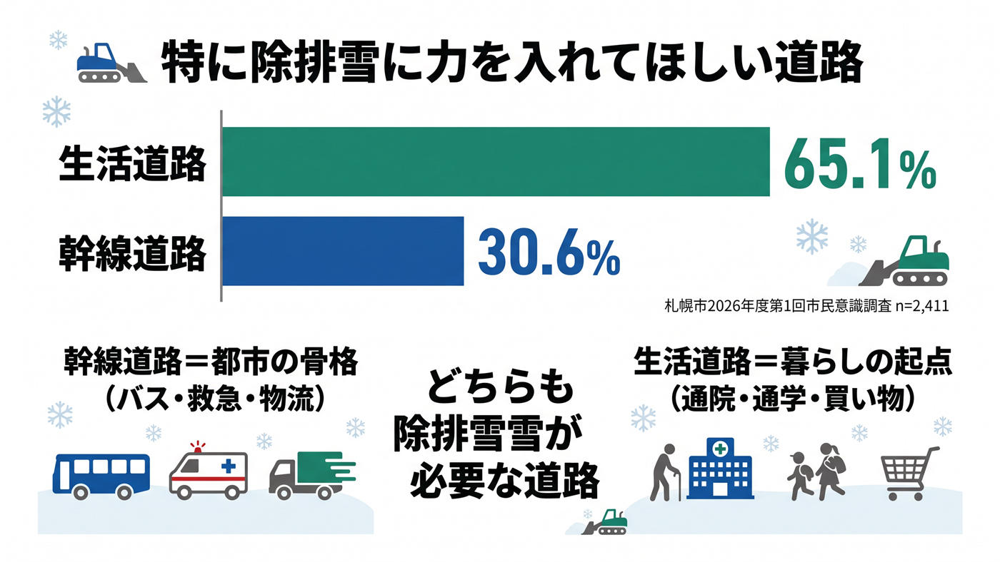

生活道路の除排雪と地域負担の不公平感
地域が費用を分担するパートナーシップ排雪に負担感・不公平感が広がる。

背景
「幹線道路」はバス路線・救急・物流・通勤を担う都市の骨格で、市が責任をもって除排雪する。「生活道路」は住宅地内の道路で、通院・通学・買い物・ゴミ出しなど日々の暮らしの起点となり、その運搬排雪は住民・業者・市が費用を分担する「パートナーシップ排雪制度」に支えられている。高齢化や町内会加入率の低下で、地域がまとまって費用と労力を出す前提が崩れつつある。
事実
- 生活道路の運搬排雪は、住民・除雪業者・市の3者が費用と役割を分担するパートナーシップ排雪制度で実施されている。
- 地域の費用負担感・不公平感の増加、担い手の高齢化、在宅介護など住民以外の道路利用の増加が課題として挙げられている。
- 2026年度（令和8年度）第1回市民意識調査（2026年6月22日〜7月5日、満18歳以上5,000人に郵送・回収2,411人＝48.2%）で、特に除排雪に力を入れてほしい道路は「生活道路」65.1%、「幹線道路」30.6%、「特にない」1.5%と、生活道路が幹線道路の2倍超を占めた。
- 一方、市は都市機能（バス・救急・物流など）を維持するには幹線道路の除排雪を優先せざるを得ないとし、市民の理解を求めている。市民の期待と市の運用方針の間にはギャップがある。
- 2026年1月の大雪時に市が実施した生活道路の「緊急排雪」について、『実施も内容も知っている』は42.8%、『実施は知っていたが内容は知らない』40.3%、『知らなかった』13.6%と、認知は道半ばである。
- 生活道路で最も重視すべき点は『凸凹・ザクザク路面の抑制』39.2%、『車1台と歩行者1名がすれ違える最低限の幅(約3.2m)の確保』38.7%、『雪山の高さ・交差点の見通しの改善』18.1%だった。
解釈
生活道路と幹線道路は「どちらを選ぶか」ではなく、両方が除排雪を必要とする道路である。幹線道路が滞れば都市全体の物流・交通・救急が麻痺し、生活道路が埋まれば救急車の到達・通学・通院という一人ひとりの生活が止まる。市が幹線を優先するのは、限られた予算・人員・雪堆積場のなかでの『トリアージ』であって生活道路の軽視ではない。ただし市民の実感（65.1%が生活道路を重視）との差は、優先順位の理由や緊急排雪の内容が十分に伝わっていないこと（内容まで知る人は42.8%）にも起因する。対立の構図ではなく、限られた資源の配分と、市民の納得をどう設計するかの問題として捉え直す必要がある。加えて、雪処理を地域コミュニティの自助に頼る仕組みはコミュニティ自体が弱るほど機能しなくなるため、負担の公平性と持続性も併せて作り直す必要がある。
提案
- 費用負担の仕組みの見直しと、地域差・不公平感の是正。
- 生活道路除排雪の試験施工など新方式の検証と展開。
- 幹線道路を優先する理由と、生活道路の作業予定・進捗をSNS等でわかりやすく発信し、緊急排雪の内容認知（現状42.8%）を高める。
検討体制・メンバー
札幌市建設局と各区土木センターが地域と調整している。検討会には町内会・住民代表、除雪事業者、福祉部局（高齢者世帯の事情に詳しい人材）、制度設計・行政学の専門家を入れ、負担の公平性を制度として再設計するのが望ましい。
AIノート
AIの貢献度は中。世帯構成や道路状況のデータを使った負担額の公平な算定や、排雪要望のオンライン集約・最適スケジューリングに役立つ。合意形成そのものは人の対話が中心で、AIは判断材料の提供役にとどまる。